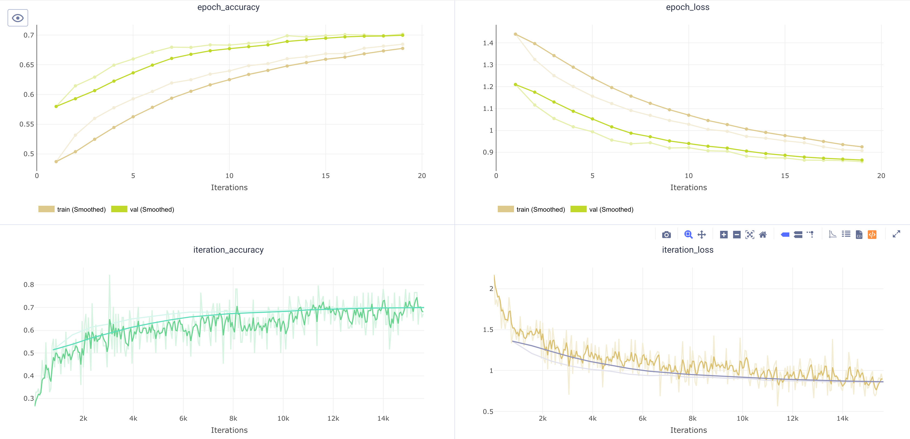
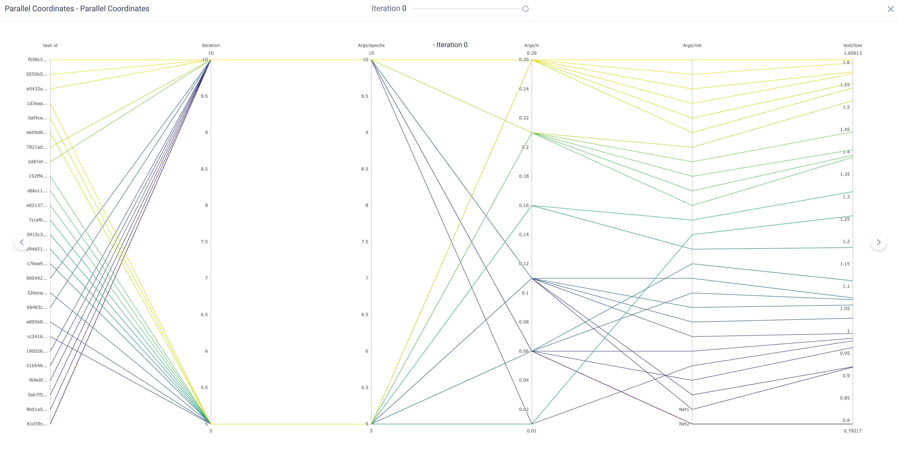
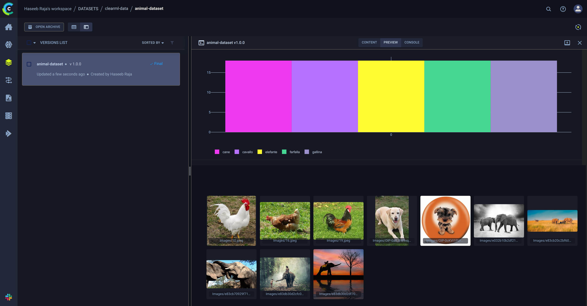
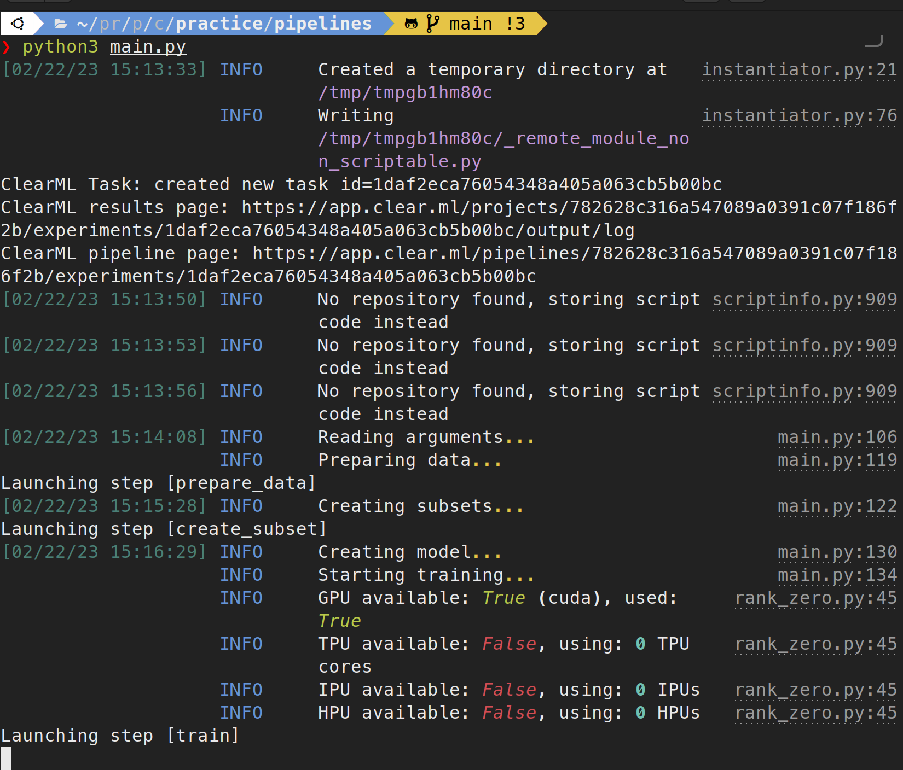

Exploring ClearML
2023An MLOps repository with starter scripts for ClearML integration into ML pipelines and workflows. Also includes some rich logging and prefect workflow. I cover a variety of topics including experiment tracking, model artifacts, data versioning, pipeline orchestration, and hyperparameter tuning. It is simple and elegant. My aim with this project is to get familiar with the overall ML infrastructure, MLOps, and ClearML. I am also introducing it to my colleagues and company so that we can better manage our ML experiments and pipelines.
ClearML is an open source platform that automates and simplifies developing and managing machine learning solutions for thousands of data science teams all over the world. It is designed as an end-to-end MLOps suite allowing you to focus on developing your ML code & automation, while ClearML ensures your work is reproducible and scalable.
- Repository
- GitHub Repository
- Documentation
- ClearML Docs
- Platform
- Windows / MacOS / Linux
- Stack
- ClearML, Python, PyTorch, PyTorch-Lightning, Prefect, Rich



